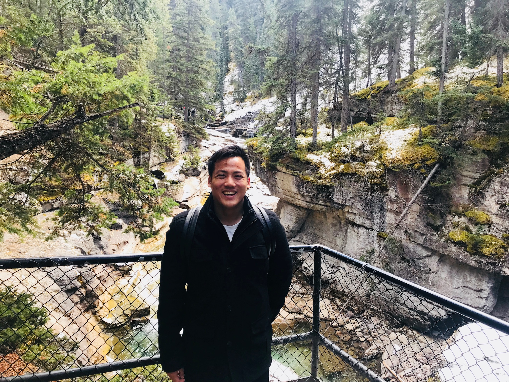

About Me
I am a research, funding, and technical consulting professional with a PhD in Environmental Toxicology and more than a decade of experience in applied research, laboratory management, food and agricultural innovation, and environmental science.
My background combines scientific expertise with practical experience developing fundable, commercially relevant, and regulatory-aligned projects. I have contributed to 42 scientific publications, seven book chapters, one patent, and 33 conference presentations, and supported 16 successful funding applications representing approximately $3.7 million.
I also bring extensive laboratory leadership and quality-management experience, including supervising multidisciplinary teams and working within an ISO/IEC 17025-accredited environment. My work focuses on bridging research and industry through grant development, technical project planning, laboratory leadership, and the translation of scientific ideas into practical outcomes.
Let’s Connect
I welcome opportunities to connect with researchers, research teams, and organizations seeking support in advancing scientific ideas and professional goals. I can provide assistance with research consulting, grant strategy and proposal development, project positioning, technical writing, and manuscript preparation for peer-reviewed publication.
Whether you are developing a new research project, pursuing funding, strengthening a proposal, or preparing findings for publication, I bring experience in translating complex scientific concepts into clear, compelling, and well-structured materials.
Contact
Email: tse.tjt@gmail.com